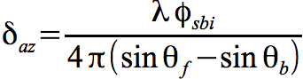

ANSI-C program: sbi_offset.c
NAME
sbi_offset Calculate azimuth offsets from
unwrapped split-beam interferogram
SYNOPSIS
sbi_offset <sbi_unw> <SLCf_par>
<SLCb_par> <OFF_par>
<az_offset>
| <sbi_unw> | (input) unwrapped phase of split-beam interferogram (float) |
| <SLCf_par> | (input) SLC parameter file (forward-looking) |
| <SLCb_par> | (input) SLC parameter file (backward-looking) |
| <OFF_par> | (input) interferogram offset parameter file |
| <az_offset> | (output) azimuth offsets |
EXAMPLE
sbi_offset 19990915_19991020_4_20.sbi.unw
19990915f.rslc.par 19990915b.rslc.par 19990915_19991020_4_20.off
19990915_19991020_4_20.az
The unwrapped phase split-beam interferogram
19990915_19991020_4_20.sbi.unw is converted to
offsets parallel to the radar velocity vector using information
in the SLC parameter files for the forward and backward squinted
beams and the offset parameter file of the interferogram
DESCRIPTION
sbi_offset is used
convert the unwrapped phase of the split-beam interferogram to
azimuth offsets in meters, see Bechor and Zebker 2006. A positive
offsets denotes a shift in the same direction as the radar
velocity vector. The scale factor for the conversion is
calculated for each point in the scene using the geoemetry
timing, and doppler polynomials stored in the SLC parameter file.
The number of looks in range and azimuth and the interferogram
dimensions are stored in the interferogram offset parameter
file.
In the normal processing flow, a
single-look interferogram is produced from the forward-looking
beams and a second interferogram from the backward-looking beams
using SLC_intf. These interferograms
are differenced using comb_interfs and then
multi-looked in range and azimuth using multi_cpx to produce a multi-look split-beam
interferogram. The split-beam interferogram is usually filtered
with adf and then unwrapped using
mcf. In this example, 4 range looks and 20
azimuth looks are used to estimate the phase that is proportional
to the azimuth offset prior to unwrapping.
The relationship between the azimuth phase and the forward and backward squint angles are given by the equation:

where the azimuth offset is proportional to wavelength divided by the differences in the sin of the forward and backward squint angles. The squint angles are determined from the doppler centroids of each look and the effective along-track velocity of the radar. The effective along-track velocity is determined from the orbital state vectors and an ellipsoidal earth model.
The output azimuth displacements can
be displayed using the programs disdt_pwr24 and
rasdt_pwr24.
Bechor, N., H. Zebker,
"Measuring two-dimensional movements using a single INSAR pair",
Geophsical Resarch Letters, Vol. 33, L16133, 2006,
doi:10.1029/2006GL026883
SEE ALSO
typedef_ISP.h, SLC_par, OFF_par,
sbi_filt